Selección cuidadosaFruta escogida para ti
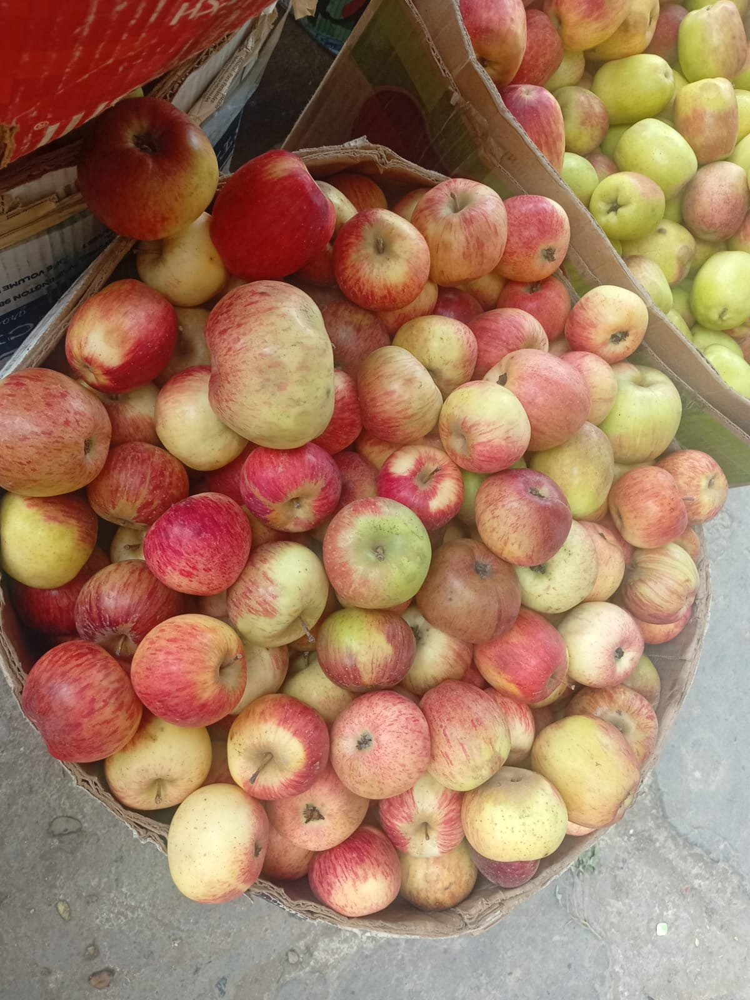
Fruta seleccionada cada día
Frescura que se ve.
Calidad que se siente.
Frutas frescas por kilo y por caja para hogares, bodegas, juguerías y negocios.
Pedidos
Por kilo y por caja
Entrega o recojo coordinado
Atención rápidaCoordinamos por WhatsApp
Venta flexiblePor kilo o por caja
Nuestro catálogo
Elige lo más fresco
Consulta la disponibilidad y el precio del día. Atendemos pedidos personales y para negocios.
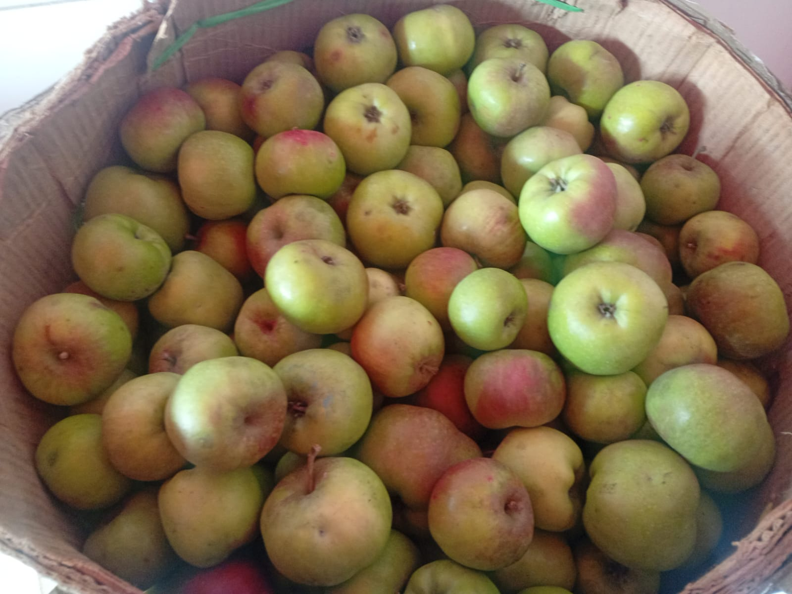
Más pedidaManzanas
Manzana Caña
Seleccionada a mano, de excelente tamaño y calidad.
Desde S/ 3.50por kg
Pedir por WhatsApp →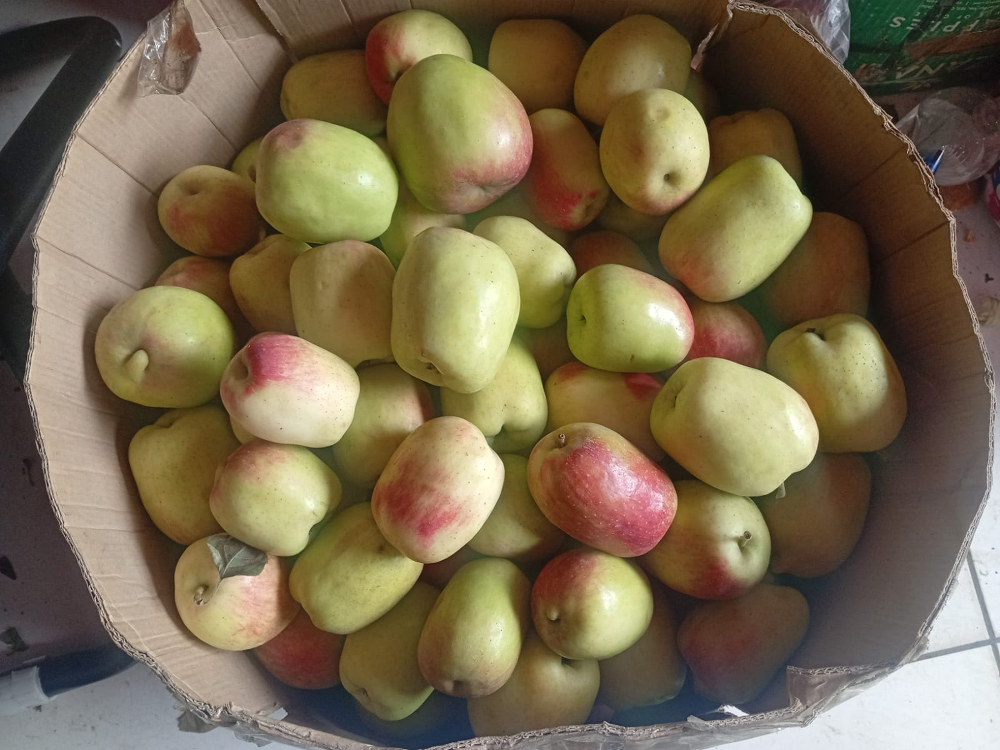
PremiumManzanas
Manzana Israel
Dulce, jugosa y con una textura crocante.
S/ 3.00por kg · precio referencial
Pedir por WhatsApp →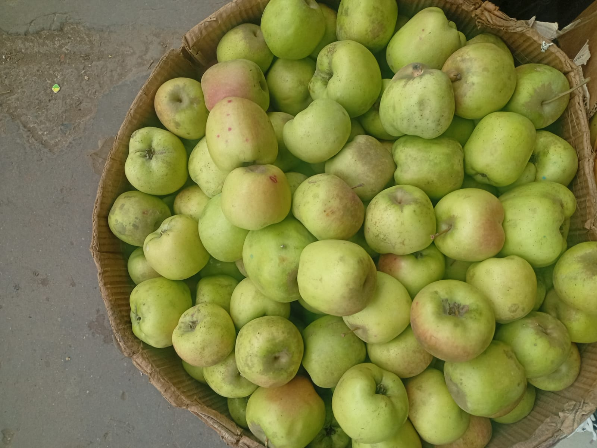
FrescaManzanas
Manzana Agua
Ideal para refrescarse, preparar jugos o postres.
S/ 3.00por kg · precio referencial
Pedir por WhatsApp →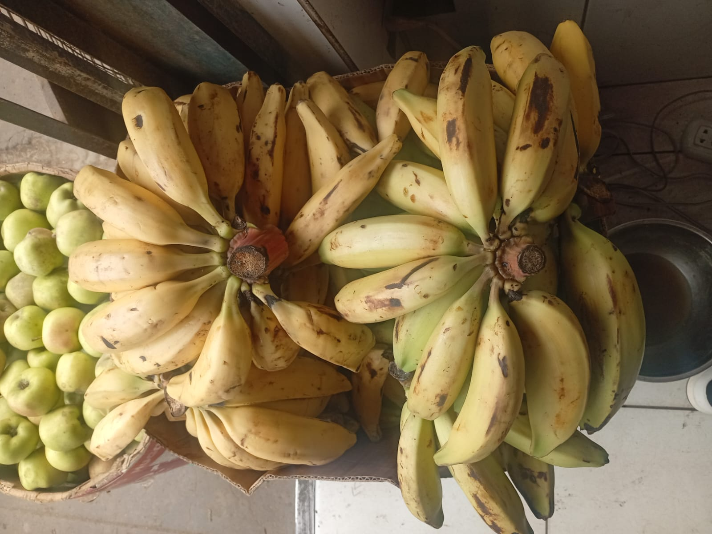
Del campoPlátanos
Bellaco e Isla
Madurados al natural, ideales para la cocina y el negocio.
S/ 3.00por kg · precio referencial
Pedir por WhatsApp →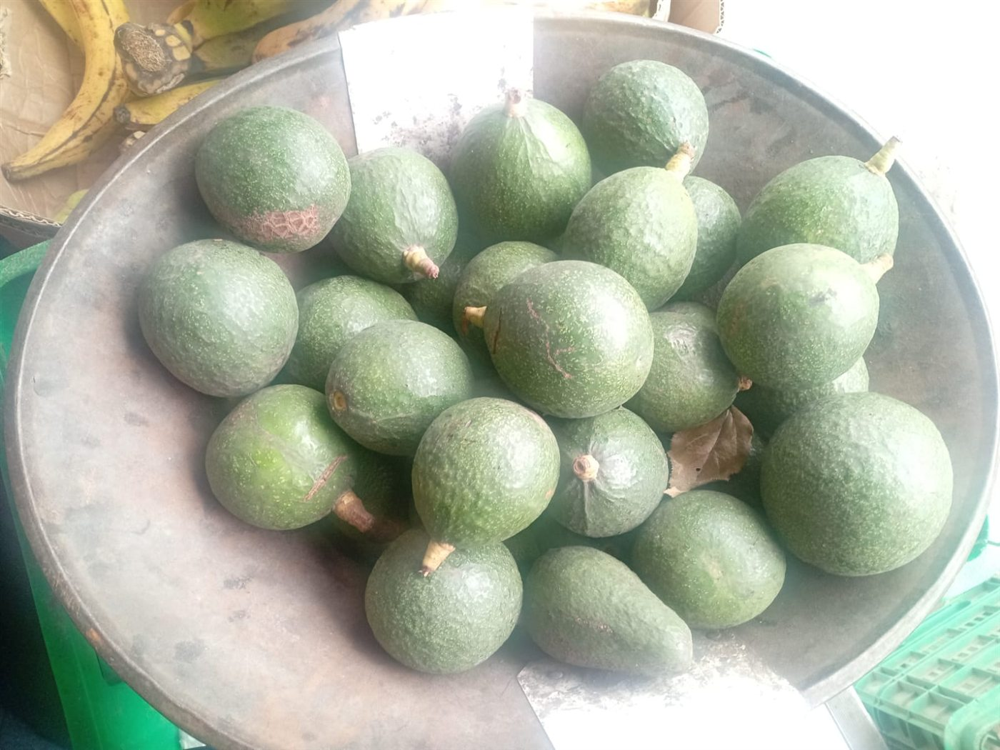
NuevaPaltas
Palta fresca
Cremosa y seleccionada, ideal para ensaladas, desayunos y negocios.
Consultarprecio y stock del día
Pedir por WhatsApp →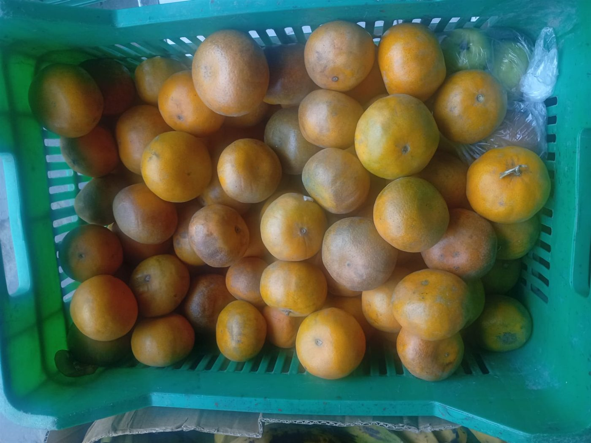
TemporadaCítricos
Mandarina
Dulce, jugosa y refrescante. Disponible por kilo y por caja.
Consultarprecio y stock del día
Pedir por WhatsApp →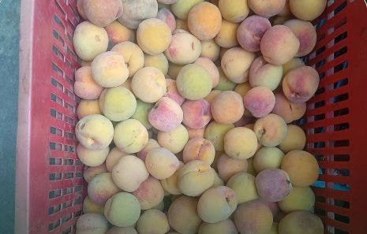
Dulce y frescoFruta de temporada
Melocotón
Aromático, dulce y jugoso. Ideal para consumir fresco, en jugos o postres.
Consultarprecio y stock del día
Pedir por WhatsApp →Los precios son referenciales y pueden variar según temporada, tamaño y cantidad.
Para tu hogar o negocio
¿Necesitas una caja completa?
Cuéntanos qué fruta buscas y cuánta necesitas. Te confirmamos stock, precio y coordinación de entrega.
Producto real
Así llega nuestra fruta
Imágenes reales de nuestras cosechas y presentaciones disponibles.
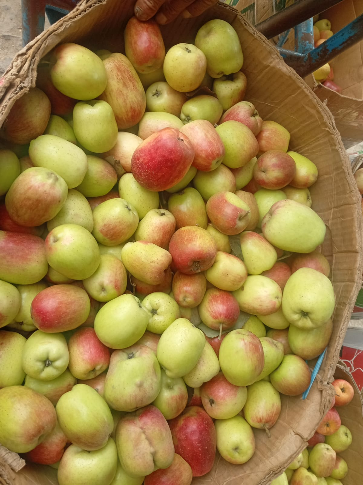
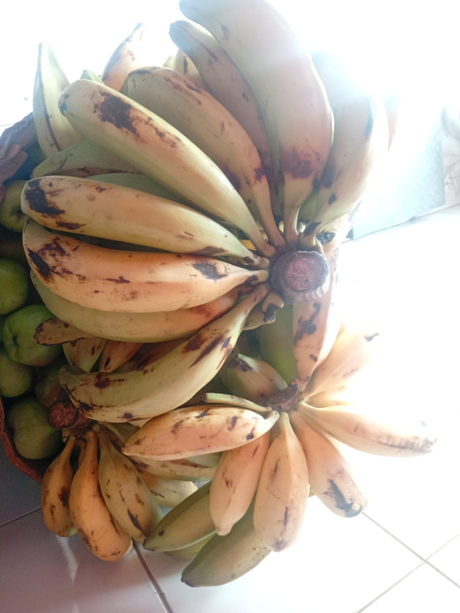
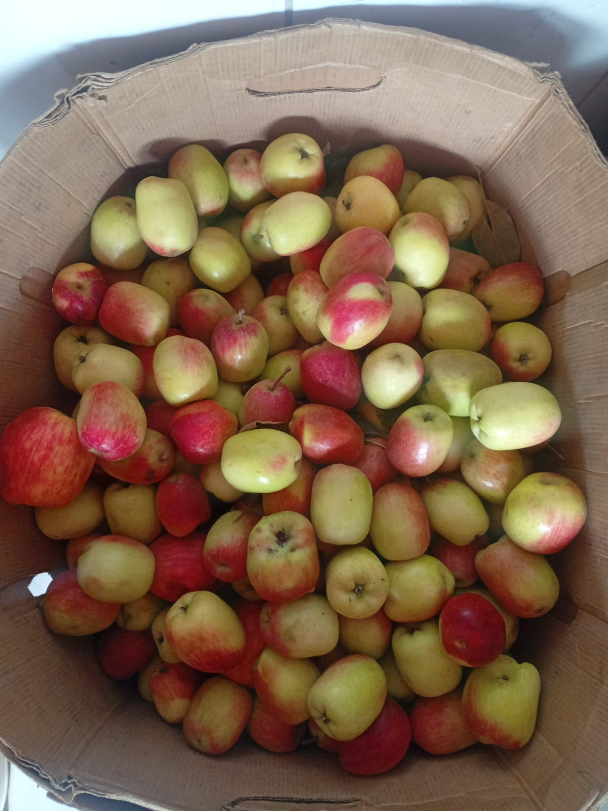
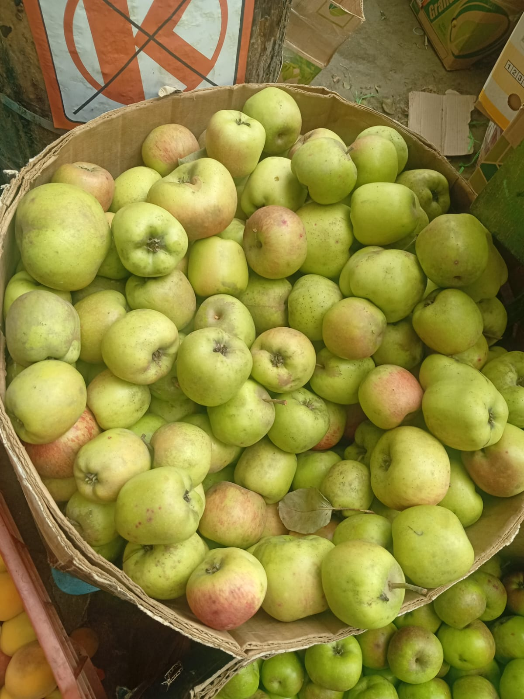
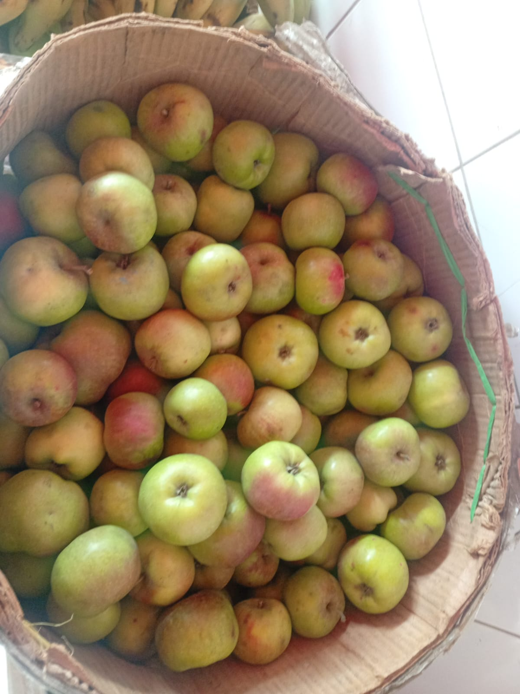
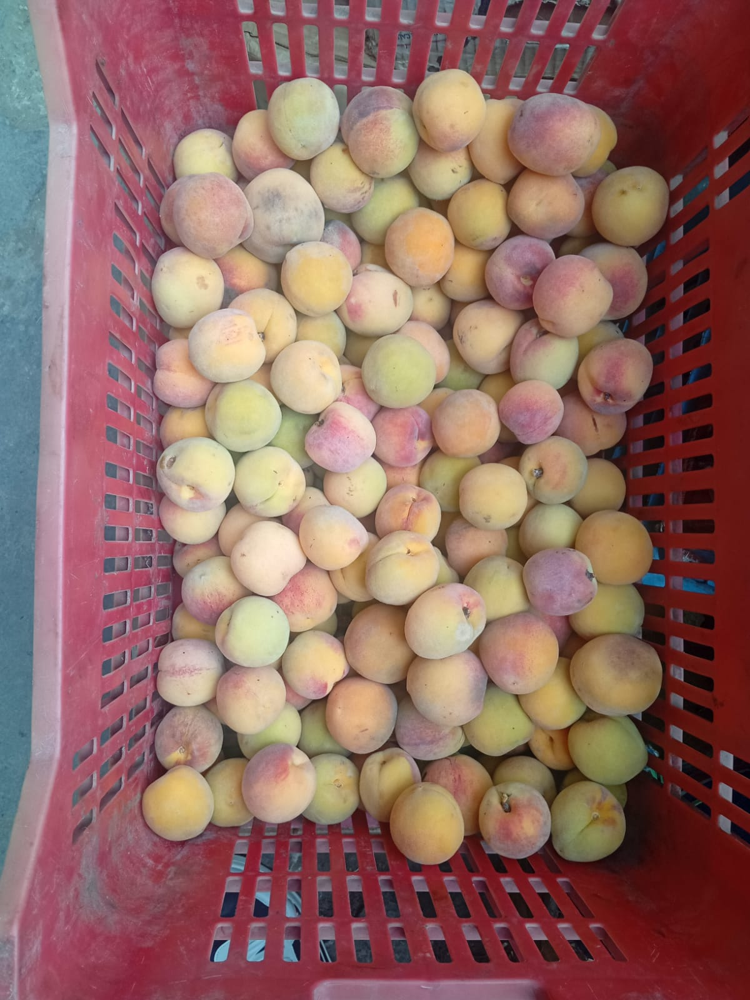
Hablemos
Tu pedido fresco empieza aquí
Escríbenos para consultar el stock del día y coordinar tu pedido.